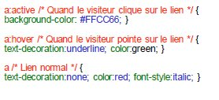
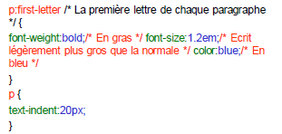
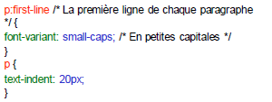

- Principe des CSS
- Format CSS
- Appel d’un fichier .css
- Directement dans le header du fichier HTML
- Appliquer un style à des balises
- Exemple CSS
- Des commentaires dans CSS
- Utiliser les classes
- L'attribut id
- Les balises universelles
- Exemple
- Imbrications de balises
- Taille du texte
- Polices
- Exemple
- Alignement simple
- L'indentation: la mise en retrait du texte
- Effets de style
- Les majuscules en CSS
- La décoration
- Les couleurs
- La notation hexadécimale
- La méthode RGB (Red-Green-Blue)
- Le fond
- La couleur de fond
- Exemple
- L'image de fond
- Effets sur les liens
- Les pseudo-formats
- Au passage de la souris
- Au moment du clic
- Première lettre et première ligne
- Retrait des listes
- Exemple
- Représentation de la puce
- Pour les listes non ordonnées (ul)
- Pour les listes ordonnées (ol)
- Changer l’image de la puce
- Dimensionnement et positionnement
- Mise en page
- Tableaux
- Formulaires
- Au passage de la souris
- Au moment du clic
• Le pseudo-format :active permet d’appliquer un style particulier au moment du clic.
• Le lien gardera cette apparence très peu de temps : juste pendant que vous cliquez avec le bouton de la souris.

Première lettre et première ligne
En CSS, il est possible de modifier automatiquement l’apparence de la première lettre et de la première ligne du texte contenu dans une balise.
La première lettre

La première ligne

La propriété list-style-position permet d'indiquer si on veut que la liste soit mise en retrait ou non.
list-style-position peut prendre 2 valeurs :
inside : la liste n'est pas mise en retrait.
outside : la liste est mise en retrait (par défaut).